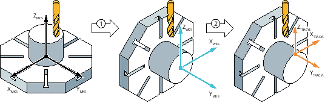

Die Transformation TRACYL wird für die Bearbeitung von runden, zentrisch gespannten Werkstücken auf der Mantelfläche verwendet.
Die Bewegung von XY in der Arbeitsebene G17 wird in eine CY-Bewegung transformiert. Die Transformation wird in Verbindung mit CYCLE800 parametriert. Der CYCLE800 wird dazu verwendet, um die Rotationsachse des Werkstücks rechtwinklig zur Spindelachse zu schwenken.
① | Schwenken Ebene, Z180°, X90° |
② | TRACYL |
Beachten Sie für die Reihenfolge der Geometrieachsen, dass durch die Verwendung von CYCLE800 die Zuordnung der Geometrieachsen speziell für diese Konfiguration angepasst werden muss.
Die genau verwendete Schwenkeinstellung des CYCLE800 (insbesondere die Rotationen und die Auswahl der +/- Lösung) muss vom Maschinenhersteller dokumentiert werden.
Eine Änderung der Ausrichtung des WKS über CYCLE800 bewirkt ein geändertes Verhalten der Transformation.
Die Transformation ist so parametriert, dass die WKS-X-Achse von der Rundachse C abgebildet wird, die WKS-Y-Achse verläuft parallel zur Zylinderachse und die WKS-Z-Achse ist die Zustellachse. Die dadurch entstandene Abwicklung ist wie die Ebene "G17" bei einer 3-Achs Fräsmaschine zu betrachten.